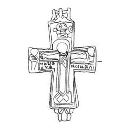
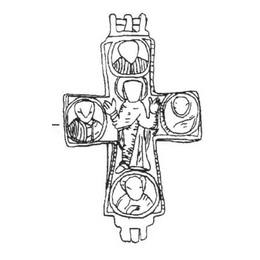

Catalog › CE-0223 · KOR2003-I.1.4
Encolpion întreg cu Răstignire și adstanți pe față, Orantă și 4 evangheliști pe revers
sec. X–XII (901–1200) · regiunea Ivano-Frankivsk („Galicina” după A. S. Uvarov), Ucraina
double-sided reliquary cross (enkolpion), aramă; c. X–XII (901–1200); find spot unknown.




Identificare
- Categorie
- Encolpion bivalv (relicvar)
- Material
- Aramă
- Tehnică
- Turnare în relief; Gravare (incizie)
- Stare
- Întreagă
- Dimensiuni
- Î 65 × L 50 mm
Iconografie
- Descriere avers
- Imagini în relief ale Răstignirii cu adstanți. Marginile valvei sunt subliniate cu o linie adâncită. Inscripția adâncită, pe jumătate ștearsă și încurcată, s-a păstrat numai pe valva de față: sub mâinile lui Hristos (după Evanghelia lui Ioan XIX, 26–27) la stânga IDEVC/CVO, la dreapta IDOVINI; în partea cea mai de sus a valvei două litere ΘC.
- Revers
- Maica Domnului Orantă; Evangheliști în medalioane
- Descriere revers
- Maica Domnului Orantă cu cei patru evangheliști în medalioane, imagini pe jumătate șterse.
- Inscripții
- IDEVC/CVO; IDOVINI; ΘC
- Limba
- Greacă
Datare și atribuire
- Datare
- sec. X–XII (901–1200)
- Centru
- Necunoscut
- Tipologie
- Korzukhina–Peskova 2003, tip I 1
Descoperire
- Regiune
- regiunea Ivano-Frankivsk („Galicina” după A. S. Uvarov)
- Țară
- Ucraina
- Context
- Necunoscut
Păstrare și referințe
- Bibliografie
- G. F. Korzukhina, A. A. Peskova, Древнерусские энколпионы. Нагрудные кресты-реликварии XI–XIII вв., Sankt-Petersburg, 2003 [Korzukhina–Peskova 2003], p. 45, cat. nr. I 1/4, reprodusă la Табл. 3 (planșe, p. 245). Bibliografie citată în sursă: Уваров 1910, 38, табл. XXVI, 88–89; Корзухина, архив ф. 77, д. 14, л. 9.
- Figura
- Табл. 3
- Planșe
- Korzukhina–Peskova 2003, Табл. 3 (planșă fără paginație proprie în PDF; p. 245 tipărită)
- Observații
- Datare după Peskova: sec. X–XII. Circumstanțe: Începutul sec. XIX (după A. S. Uvarov se afla „în colecția Matiției”). Proveniență în colecție: locul de păstrare necunoscut; după informațiile lui A. S. Uvarov se afla la începutul sec. XIX „în colecția Matiției”. Encolpion întreg, cu capete drepte, ușor lărgite; la capătul de sus deteriorare cu pierdere de metal. Răstignirea de pe față: tipul de veșmânt nespecificat. Coordonate: nu sunt date în sursă.
Citare: Corpus Encolpiorum, CE-0223, Encolpion întreg cu Răstignire și adstanți pe față, Orantă și 4 evangheliști pe revers, https://vitaliejosanu1979-ux.github.io/primul-meu-proiect/piese/KOR2003-I.1.4/ (accesat 2026-10-17).